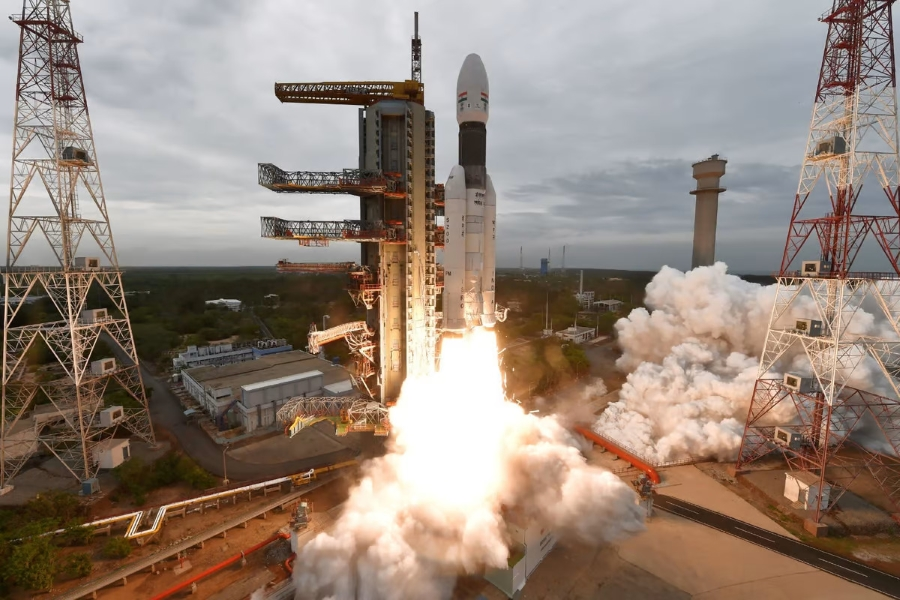

Chandrayaan-2

Chandrayaan-2 mission is a highly complex mission, which represents a significant technological leap compared to the previous missions of ISRO. It comprised an Orbiter, Lander and Rover to explore the unexplored South Pole of the Moon.